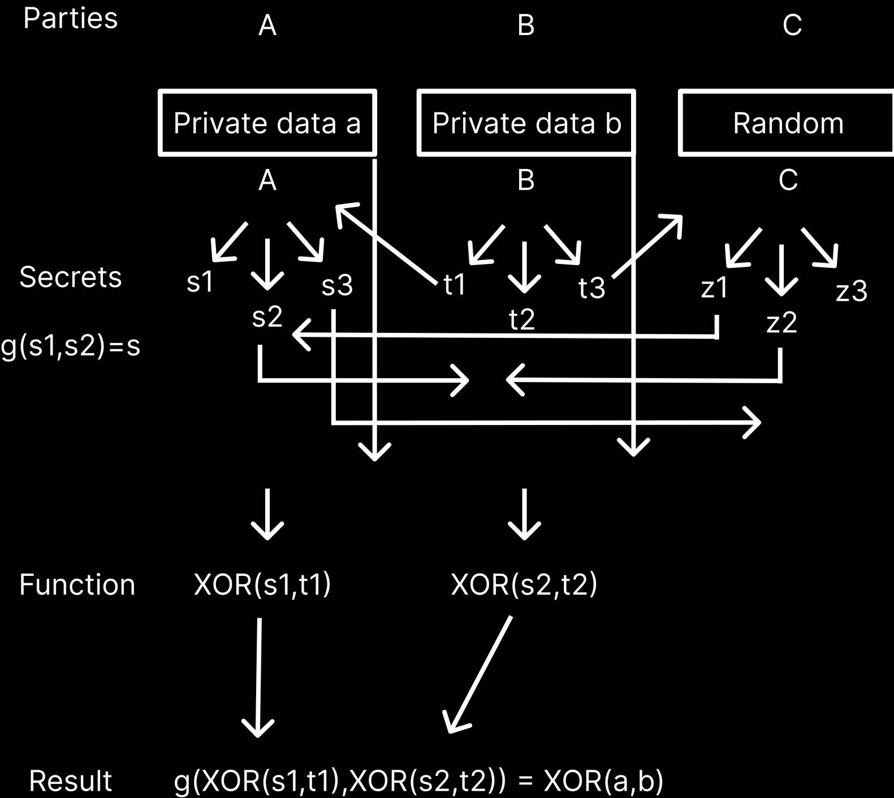

Title: STDinfo: Secure multiparty computation to infer transmission risk from 2 sexually transmitted diseases (STDs) test reports
Author: Noorul H. Ali, MS (bioengineering), Tufts University, Medford, MA 02155, United States
Correspondence: onitomed@gmail.com
Abstract
Introduction
Results
Discussion
References
Sensitive medical data like medical reports of sexually transmitted diseases must be compared between 2 individuals to infer transmission risk. The standard technique of doing this today is sharing reports between 2 individuals and manual comparison. This violates patient privacy in the event of mismatch. Mismatch condition means one individual suffers a sexually transmitted disease but the other doesn't. STDinfo is an algorithm built on secure computation to compare medical reports of 2 individuals without sharing medical data between individuals, maintaining patient privacy in mismatch case.
Secure computation is part of information theoretic cryptography. How to compute a function F(a,b) that takes input a from Alice and b from Bob, without revealing b to Alice or a to Bob?
Bob encrypts b and send enc(b) to Alice. Alice computes F(a,enc(b)) sends it to Bob. Bob can compute F(a,b) without knowing b, because F is a special function that allows that using garbled circuits, finite field arithmetic, or Shamir secret sharing.
Applications in privacy-preserving data analytics, quantum-resistant cryptography.
Problem set up:
Alice and Bob have 2 private strings.
A = 010001
B = 010000
Compute bitwise XOR and modulo-2 sum. 0+0+0+0+0+1 = 1.
Bit strings are medical reports. Bitwise XOR and modulo-2 sum returns False (1) if A has a sexually transmitted disease that B doesn’t, and True (0) if both can have safe sex because they either have no diseases or share the same diseases.

Figure 1: STDinfo algorithm information flow diagram
3 parties A,B,C. A and B have private data ‘a’ and ‘b’ .
A generates shares s1,s2,s3 from ‘a’ with the property that any 2 can be used in a public function g() to get a. This property is called Shamir secret sharing. B similarly generates shares t1,t2,t3 from ‘b’.
A sends s2,s3 to B and C respectively. B sends t1,t3 to A and C respectively.
A calculates XOR(s1,t1) and sends it to B. B calculates XOR(s2,t2) and sends it to A.
A and B calculate XOR(a,b) using XOR(s1,t1) and XOR(s2,t2) because XOR(s1,t1) and (s2 XOR t2) are shares of XOR(a,b). (from g(s1,s2)=s). This is called 2-reconstruction property.
STDinfo is an algorithm for privacy-preserving data analytics.
Instead of bitwise XOR and modulo-sum, other operations such as multiplication can be done, opening the machine learning toolkit for implementation.
Lasso is a regression algorithm that ignores features having low correlation with target. This was used to find important features from a combination of 2 private datasets without the parties revealing datasets to each other.
Applications in semiconductor fab optimization, healthcare data analytics, privacy for large language models.
Future work: extending functions beyond XOR, computer vision integration to convert PDF test reports into bit strings, library for secure computation on Android and iOS
[1]: MPyC documentation: Library in Python for secure multiparty computation. https://mpyc.readthedocs.io/en/latest/
[2]: Ali N. STDinfo repository: Github repository for Python implementation of secure multiparty computation to find disease transmission risk from medical test reports. https://github.com/alinoorul/stdinfo
[3]: van Egmond, M.B., Spini, G., van der Galien, O. et al. Privacy-preserving dataset combination and Lasso regression for healthcare predictions. BMC Med Inform Decis Mak 21, 266 (2021). https://doi.org/10.1186/s12911-021-01582-y